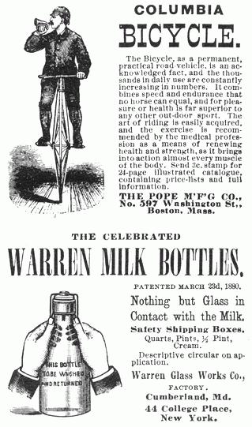
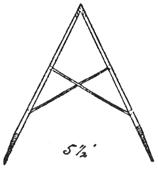
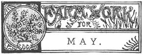
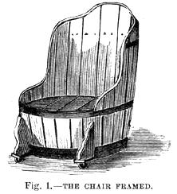
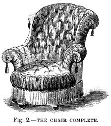

Here are two more pages of old-timey information taken from issues of THE NEW YORK HOMESTEAD and THE AMERICAN AGRICULTURIST dated 1882, 1883 and 1893.
May is a very busy month on the farm, and every hour of labor should be so planned as to tell most effectually. There is danger of haste, and of doing the work in an imperfect manner. The great error of leaving undone the things that should now be done, arises from want of a plan of operations. "As we sow, so shall we reap," and this is the month of sowing and planting. Do everything in a thorough manner, and keep abreast with the demands of the season. Push the work, and do not let the work push the farmer.
Corn Planting.- Over a large part of the country, this is the month for planting our leading grain crop. Many make the mistake of putting the corn into the ground before it is ready. Corn is a semitropical plant, and its grain should not be planted until the soil is warm and mellow. "Corn-planting time" is when settled weather has come. There is no better guide than that used by the Indians, who put in their maize when the leaves of the oak are beginning to unfold. Some farmers watch the apple orchard, and plant when the blossoms appear. If the kernels are put into a cold soil, they either remain dormant or rot, and nothing is gained, while, should the germinating grain be overtaken by a cold spell, the field has to be replanted. The corn plant has only a short season for its growth, and requires the best provisions for reaching maturity before the frosts of autumn come. The corn ground should be well supplied with manure in an available form for the rapidly-growing plant. This manure needs to be near the surface, and thoroughly mixed through the soil, that the many fine roots may find it readily. Those who have practised putting a quantity of some quick-acting compost or fertilizer in each hill, know the importance of having food for the corn plant close at hand. Much depends upon the quality of the seed, and therefore only the best kernels of the superior varieties should be used. It will pay to get seed that has been grown espe cially for that purpose, even though it cost much more than the common grain taken from the crib. To keep crows from pulling the young corn, the grain may be rolled in tar, and afterwards in plaster. The tar can be most easily applied by mixing it with hot water, and stirring in the corn. Among the best of scare-crows are those which make some sort of motion and produce a noise. A small windmill, with "clapper," and pieces of bright tin suspended by strings, constitutes a good "scare." It is not best to use a gun unless fired without shot or ball. Crows do not deserve death, as they are the friends of the farmer for most of the year. They live largely upon cut-worms and other insects, and many times, when pulling a young corn plant, they are seeking the marauder that lies hidden at its base.
Meadows and Pastures -The frosts of winter heave the soil and it is well to pass a roller over the meadows and pastures, to firm the surface and make it smooth for the mowing machine. All stones loosened by the frosts should be removed; large ones, if not needed for building purposes, may be sunk out of reach of the plow. Meadows maybe much injured by live stock running over them in early spring, when the ground is wet. Any grazing done at this time is at the expense of the hay crop. It is far better to keep the farm animals in the stables and yards until the pasture is able to furnish a full ration, or nearly so.
Horses.-With hard work, the farm horses should have the best of care. There is danger of overfeeding, especially with corn, thus producing irritation of the skin and restlessness. Good cut hay, wet with bran or meal mixed, is a fine ration twice a day. The brush should be freely used, that the sweat and dirt collected one day may not remain on during the next. An occasional sponge bath is helpful in keeping the horses in good trim. Look well to the feet, that no disease may come to these much exposed parts. Flies will soon come, and some protection from these pests should be made. A thin sheet, fitting the back, with strings to go under the neck and tail, is inexpensive and effective.
Cattle. -The change from dry fodder to succulent pasture food is a critical one, and all animals need more than ordinary care at this time. Young stock are especially subject to disease from over-feeding on green grass, causing black leg, black quarter, and other dangerous troubles. It is best to make the change gradual, by turning the calves out to grass for only a part of each day. In-coming cows need to have their feed reduced before calving, to prevent garget. They should be kept from exposure to cold rains, and in a quiet place. A brush, well used, will go far towards giving the cattle smooth skins and a healthful condition.
Sheep.-There is money in early lambs, if they are pushed forward rapidly for the market. A small flock in fine flesh, sold early, often brings more profit than a large one of late and poorly-fed lambs. Ewes, from which lambs have been taken, sometimes need the milk removed from their udders. Dry ewes, if not to be kept, may be fattened rapidly and marketed. All sheep should be carefully tagged before being turned out to grass. Much disease in the lambs is caused by filth from the mother's wool; therefore clip the wool from about the udder. From now until warm weather of early summer is a specially trying period for sheep. Parturition, the care of ewes and lambs, tagging, washing, shearing, etc., etc., require and should receive the owner's attention and watchfulness. Do not turn out to pasture too early. Permit the grass to secure a sufficient growth to become nutritious. The temptation to dispose of surplus hay and grain about this time is great. It, however, is poor economy to deprive sheep of dry food when they can get but a bare sustenance from the pasture. Let the change be gradual, turning them out an hour or two at a time, until there is no danger of too great a looseness of the bowels. A little flax-seed or oil-meal may be advantageously fed at this time. Do not be tempted to too early wasting and shearing of sheep. Wait until the weather is warm and settled, and after the washing takes place, torn the sheep either upon a dry, clean pasture, or into a straw-littered yard. The change from a thick fleece to none at all should not be made while cold spring winds are blowing, and rain-storms are frequent. If, after shearing, there comes a cool, wet day, shelter the shorn sheep at once. After May has passed, sheep will require but little care.
Poultry.-Hens should already have given good returns in eggs for the attention paid them, and now the young chicks are coming forward. Pullets hatched this month should begin to lay early in the fall, and with a warm house will continue giving eggs through the winter. Young chicks need to be kept clean and in a dry place. Move the coops frequently. If in the garden, they will catch many insects that ought to be destroyed.
The spring months, at least in the Northern States, are the most uncertain of the year, and it often happens that the works proper to April can not be performed until May.
TreePlanting may still be done; if the trees were heeled-in and shaded their growth will have been retarded. Observe what was said last month about trees that have begun to grow while in transit.
Grafting. -The best time for grafting is just as the buds on the stock are beginning to swell. But it may be done even when the trees are in bloom, though at this late time great care mast be taken. As soon as growth starts in the stock, this bark slips readily and there is danger of making bad wounds when the branches are cut off. It is best to cut the bark quite through with a knife, before using the saw. If there are buds on the stock just below the insertion of the graft, do not remove them until after those upon the graft have started.
Budded Trees.- Peach and other trees budded last summer, must be cut back as soon as the buds swell. Some leave four or five inches of stock above the inserted bud, to be cut away in August, but peach-growers usually make the cut just above the bud at once. If the inserted bud is alive, rub off all others that appear on the stock.
Cultivating in the Orchard- Manured crops may be given between the rows in a young orchard, without injury to the trees. Potatoes or roots, melons and beans are suitable ; sweet corn can be grown as the stalks may be cut early and not, like field corn, retard the ripening of the wood of the trees.
A Bearing Orchard should have the whole ground. The best treatment is to sow clover and pasture the pigs upon it.
Insects. -If canker worm moths have ascended the trees and laid their eggs, the worms must be killed by applying, by means of a syringe, Paris green stirred in water. As soon as the webs of the Tent Caterpillars are seen, remove them in early morning before the worms go out. The curculio will attack plums and peaches soon after the fruit is set. Jarring off the insects, catching them on a sheet spread under the trees and burning them, is the only remedy.
BlackKnots, often destructive to cherries as well as plums, should be cut away and burned. It may be necessary to cut off the entire branch if the knots are large. If discovered when they first appear they may be cut out; washing the wound with a solution of chloride of lime may prevent spreading.
Seeds of Evergreens may now be sown ; young seedlings must be shaded from the hot sun. This may be done by a frame work of poles supported on crotched stakes, far enough above the bed to allow of working under it, and covered with brush. On a small scale the seeds may be sown in frames which are shaded by placing a lath-work over them.
Thinning the Fruit.-The best time for removing the surplus fruit is when its growth shows how much is set. The removal of one-half or two-thirds of the number set will not diminish the quantity, by measure, that will come to perfection.
Strawberries.- The planting should be completed as soon as possible. Whatever may be the after treatment, the plants should not be allowed to form runners during the first season. The mulch, if not already on the bearing beds, should be put there at once. The picking of the crops began in Florida in February, and continues on northward as the season advances. The greater the distance from market, the less ripe should the fruit be when picked. An over-ripe berry or two will spoil the contents of a basket. After picking, the baskets should be set in the shade in order that the fruit may cool off before being placed in the crates.
Mulching, which is a necessity for strawberries, may be applied to currants and other fruits with benefit. Those who live near the coast, find the grass of the salt-marshes excellent. It is very wiry and elastic, and does not introduce seeds of weeds.
Those who live inland use the hay of fresh marshes or straw. In some of the Southern States, "pinestraw" or "pineneedles," as the leaves of the pine trees are called, is the most readily available material. Cornstalks are sometimes used.
Currants and Gooseberries.- The bushes should have more attention than they usually get. An annual manuring will greatly increase the size of the fruit, and a mulch will retard the ripening and prolong the season. Near a city market the fruit usually brings a better price if sold green, than when ripe.
Blackberries and Raspberries.- It should be borne in mind that the crop of fruit for next year will be upon the canes which grow this season. Therefore those needed for the purpose should be selected, and all others cut off, unless they will be wanted for planting elsewhere.
Grape Vines. -The novice should bear in mind that the whole new growth of the vine and the fruit, comes from the buds that were upon the canes at the fall of the leaf. In vineyard culture we want the fruit, and all parts of the vine, within reach. Hence we renew the growth each year from the lower buds on each cane, usually cutting away all of the cane above the lowest two buds. If we wish to train a vine upon an arbor, at the top of a fence, or high up on a building we can easily do it by allowing some of the uppermost buds to grow and suppressing the lower ones. The vine is so easily managed, that whoever has a few feet of soil for the roots can have an abundance of grapes.
Grape-vine Insects are numerous. As soon as the young shoots start, a small caterpillar will often be found rolled up in the young leaves, and should be removed. As soon as the vine is in flower, the rose-bugs will attack the blossoms. This insect can be kept in subjection only by catching and killing it. In early morning they are torpid and may be shaken from the vines. Catch them in a pan holding a little water upon which there floats a film of kerosene.
Training the Vine.-In vineyard training the shoots are kept tied to the trellis. It is customary to pinch off the shoot at two or three leaves above the upper cluster. New shoots from canes that have been layered should be kept tied up to stakes. Young vines, making their first growth, should produce but a single shoot; if others start, remove them, and tie up the strongest to a stake.
A Wisconsin farmer sends this experience to the American Agriculturist: "Last year, in hauling yard manure across a field afterwards planted to corn, some of it scattered off in driblets, from a handful to a pint or so in a place. When planting the corn, I found portions of these droppings, and where noticed, drew them into the hills, and with the hoe mixed them a little with the soil as the seed was dropped. In three instances, where a large handful or about a pint of the manure was thus put in, a stick was driven down to mark the hills. When hoeing, we noticed that in these hills the corn plants had started off more vigorously, were greener, and at the third hoeing they were 6 to 12 inches higher than the other hills adjoining. Our curiosity being awakened we followed up the observations, and when gathering the crop, each of the three stalks in all the three hills, had on it two large plump ears, while the surrounding corn did not average one good ear to the stalk."
"This set us to thinking and figuring. That bit of manure had given the young corn roots a vigorous start, just as good feed starts off a young calf, or pig, or lamb, and the roots penetrated further in every direction and gathered more food and moisture. These stalks being better nourished from below, ran far away from the poorly fed neighbors. As to the figures, the rows were 3 1/2 feet apart, and the hills 3 feet distant in the rows, say 4,000 hills on an acre, and 4,000 pints of manure is about 62 1/2 bushels, or two large wagon loads. Anybody can reckon the difference between six large, well-filled ears of corn on each hill, and less than three per hill, and the cost of the manure as compared with the total value of the final crop. The plowing, and the seed, and the hoeing, amount to the same in each case. All I have to say is, that every corn-hill planted on my farm this year will have at least a pint of manure in it "
We have given in past years quite a variety of forms of easy chairs, made from barrels, boxes, hollowed logs, etc. In one of our exchanges from al most exactly the opposite side of the world (the I llustrated News of Sidney, Australia), we find engravings of chairs differing a little from any we have given, and we change these somewhat to the from here shown in figures 1 and 2. A large barrel or small hogshead with iron hoops, is cut to the form shown in figure 1, the hoops being first riveted to the staves. Strips or cleats nailed on the inside at any desired hight, support the upper barrel head as a seat. The barrel is mounted on a frame of two pieces of wood with casters underneath. A broader firmer base would be formed of three or four pieces. The supporting brackets are added in front. -Fig. 2 shows how the whole may be upholstered with calico or any other material at small cost. All the above work of "Easy Chair'' making may be done home and involve very little expense.
Those who have a time of "making garden" in early spring, and doing up the sowing all at once, do not get the greatest good from their gardens. There are many vegetables of which the season can be greatly prolonged by making successive sowings. A striking example of this is Sweet Corn, which, by judicious sowings may be had every day until frost stops its growth. In many localities, the most thoroughly tropical plants, such as Lima Beans, Okra, and the Melons, do better if put in now than if sown earlier. For succession, after the first sowing, put in Bush Beans, Beets (allowing plenty to be need as beet greens), Cucumbers, and other pickle plants. Carrots, Kohl Rabi, and Salsify, are among those that may still be sown and make a crop before frost arrives.
|
|
 |
 |
|
 |
 |
 |